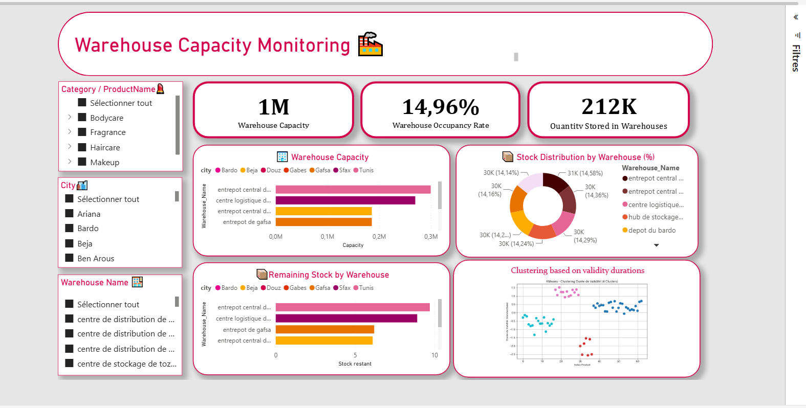
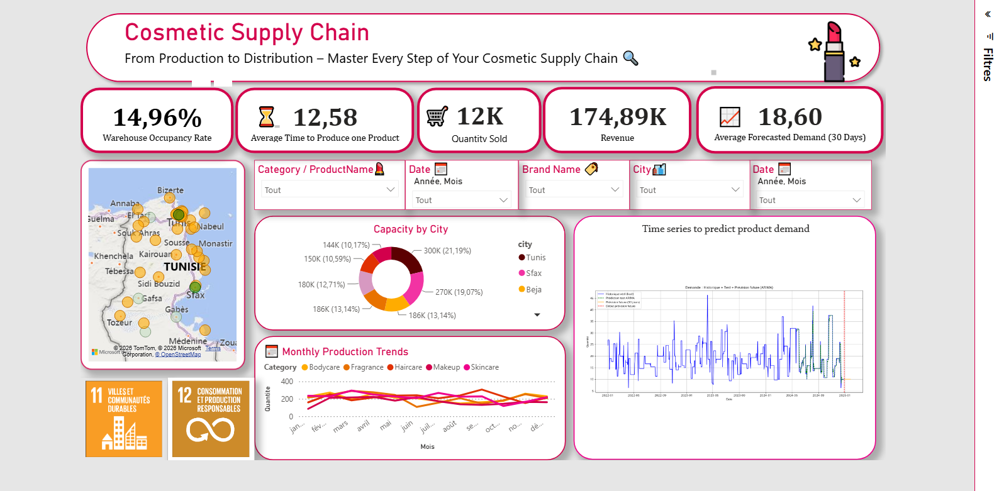
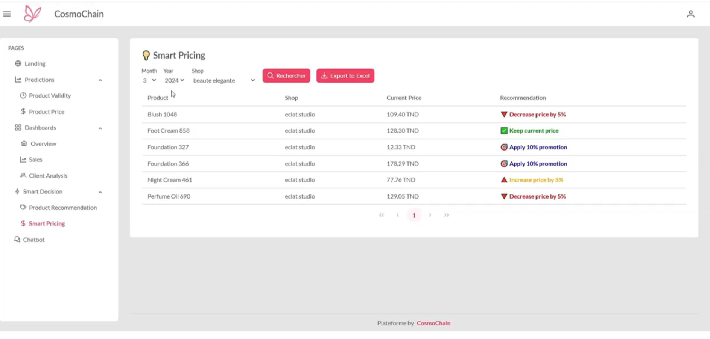
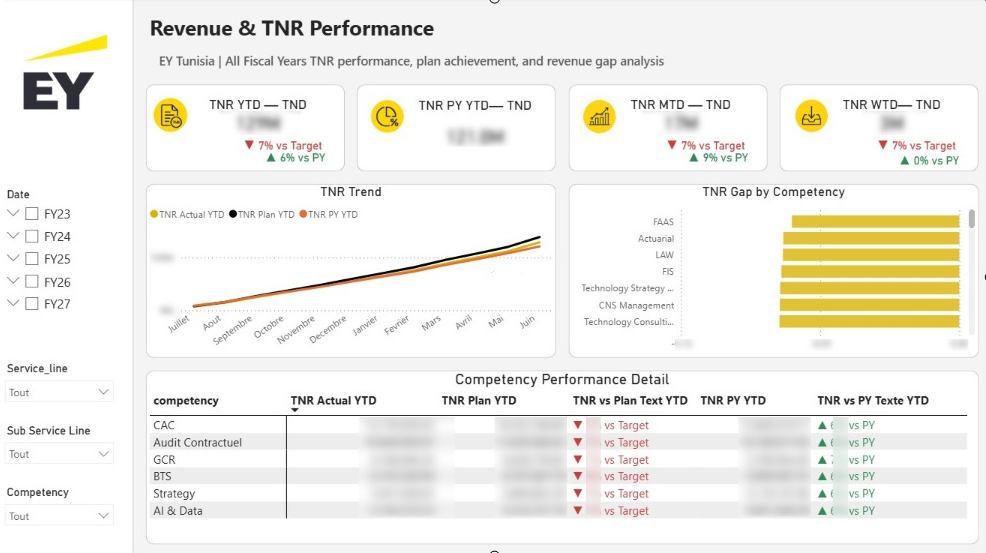
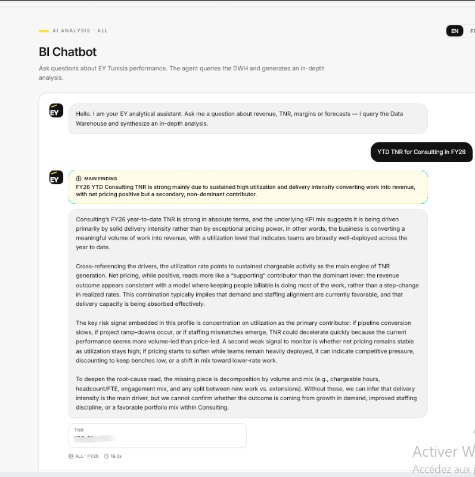
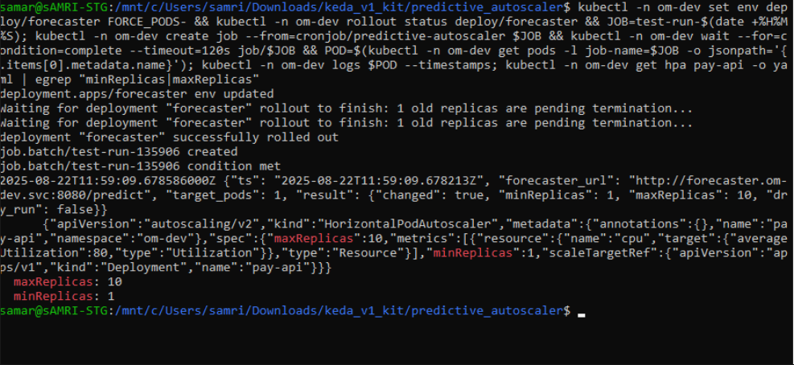
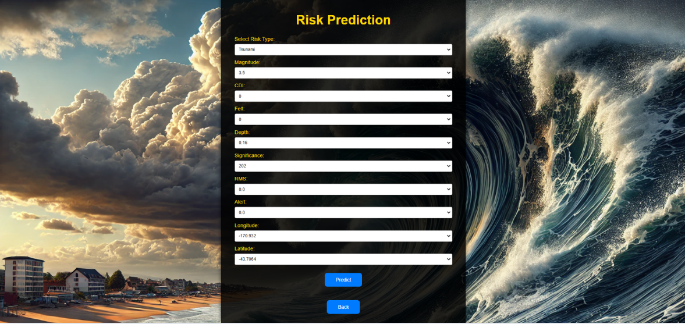
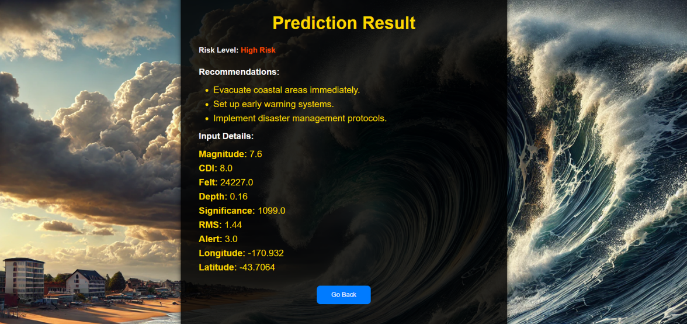

Data Analysis & Reporting
ExcelSQLPower BIPower Query
DAXKPI DesignReportingData Visualization
DATA • BI • ANALYTICS
Computer Engineer specialized in Data and Business Intelligence, with hands-on experience in data analysis, data quality, ETL/ELT, data warehousing, AI/ML solutions and decision-support systems.
About
I am a Computer Engineer specialized in Business Intelligence and Data. Through my experiences at EY Tunisia, SOFRECOM and DRÄXLMAIER, I have worked on data processing, quality controls, reporting, dashboards, data pipelines, predictive models and AI-assisted analytical solutions.
I enjoy transforming complex and multi-source datasets into reliable indicators, visualizations, predictive insights and AI-enabled decision-support tools that help business teams understand performance and make better decisions.
Technical Skills
AI & Machine Learning
Forecasting, dosage prediction for cosmetic products, product-validity prediction and probabilistic business scenarios.
Image-based detection of damaged cosmetic packages to support operational quality control before use.
Machine-learning models designed to generate relevant product recommendations and support business decisions.
AI assistants integrated into decision-support solutions to make analytical information easier to access and use.
Selected Projects
End-to-end data, BI and AI solution for the cosmetics supply chain, combining operational dashboards, forecasting, computer vision, recommendation models and role-based decision support.



Decision-support platform combining multi-source business data, automated data pipelines, scheduled Apache Airflow workflows, email-based monitoring and validation, executive dashboards, probabilistic analytics and an AI assistant.


SOFRECOM — Orange Money
Processing transaction data and developing predictive models to support cloud resource optimization.

Analysis of seismic data to identify patterns associated with tsunami risk and visualize high-risk events and areas.


Contact
Interested in Data Analytics, Business Intelligence, AI/ML and Data Engineering opportunities.